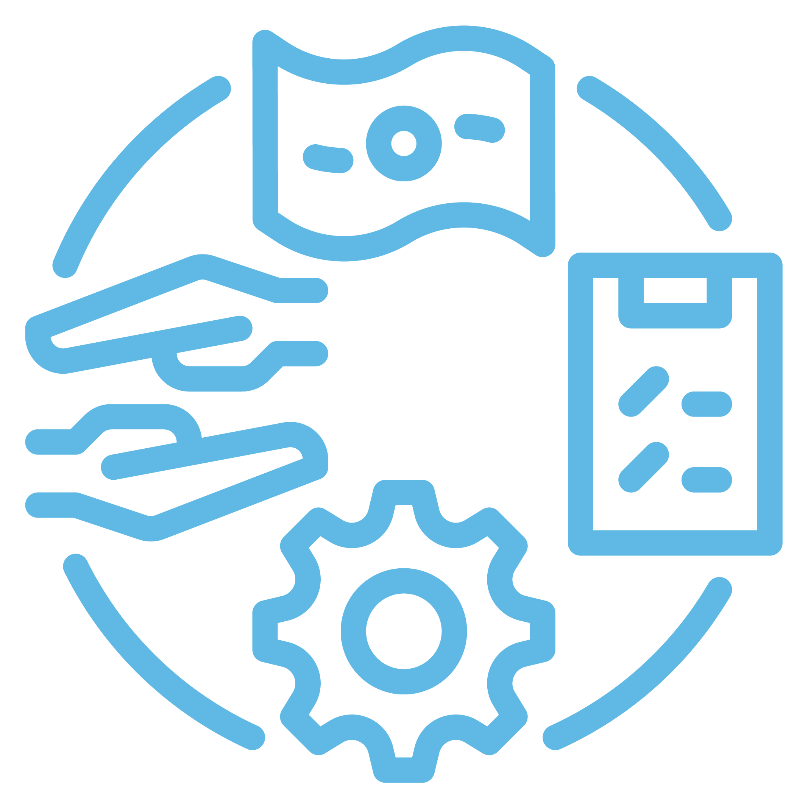

14 facteurs qui aident les gestionnaires de risques à prendre le contrôle des risques liés aux biens:
Coût de remplacement: La capacité de fournir aux souscripteurs des valeurs de remplacement des propriétés précises est essentielle. Cela aide non seulement à assurer une récupération adéquate en cas de perte, mais aussi à optimiser l’achat de votre solution de transfert de risques. De même, les entreprises ont besoin d’une analyse concise des fonctions et des activités critiques qui contribuent à leurs flux de revenus pour effectuer des évaluations précises de leur exposition au risque d’interruption des activités. Indépendamment de la taille ou de l’étendue de vos activités, vous devez vous assurer que la valeur établie de votre propriété et les valeurs associées à l’interruption de vos activités sont exactes et à jour afin de faire la distinction nette entre la valeur de remplacement et la valeur marchande de vos biens physiques. Compte tenu de l’augmentation du coût des matériaux de construction, des mises à jour annuelles comprenant les coûts du marché des matériaux devraient être prises en compte.
Antécédents de sinistres: Les programmes d’assurance des biens tiennent compte d’un historique des sinistres sur 5 ans et 10 ans. De nombreux souscripteurs considèrent les antécédents de sinistres, y compris la fréquence et la gravité, comme le facteur le plus important dans l’évaluation du programme d’assurance d’un client. Il y a donc une corrélation directe avec l’historique des sinistres d’un assuré et son coût total du risque lié à la propriété. L’analyse de l’emplacement géographique et de la vulnérabilité aux dangers naturels, de l’exposition propre à chaque industrie, de la chaîne d’approvisionnement, de la construction et de la planification de la continuité des activités permettra aux entreprises de réduire leur exposition future aux pertes.
Profil de risque: Du point de vue d’un souscripteur, le profil de risque d’un client est un facteur clé dans la détermination des prix, des modalités et de la capacité. En plus du secteur industriel et de l’historique des sinistres récents et plus lointains, un profil de risque comprend habituellement les emplacements et les valeurs géographiques, ainsi que la structure et l’exposition à des risques de catastrophe. Le profil de risque tient également compte de la mise en œuvre dans l’entreprise de saines pratiques de gestion des risques, comme la sécurité incendie, de plans de gestion de la continuité des activités mis à jour et régulièrement mis à l’essai et de la résilience de la chaîne d’approvisionnement. Les mesures visant à renforcer votre profil de risque peuvent mener à des négociations plus efficaces avec les assureurs et de façon générale, à une réduction du coût global du risque.
Prévention et ingénierie: Il n’y a pas de stratégie éprouvée pour éliminer l’exposition aux pertes, mais les responsables du risque peuvent gérer, atténuer et réduire au minimum le réseau complexe d’expositions aux pertes liées à un grand éventail des risques, allant des dommages pouvant être causés aux biens corporels et aux biens des fournisseurs, voire à leur destruction, à l’interruption ou à la réduction des activités. Pour les entreprises et les fournisseurs qui exercent leurs activités dans des régions sujettes à des catastrophes ou qui disposent d’un approvisionnement limité en eau pour faire face aux risques d’incendie, les services de protection contre les incendies et d’ingénierie des risques peuvent accroître leur capacité à respecter les normes mondiales. Les nouveaux outils technologiques, comme les capteurs de mouvements de terre ou d’eau, peuvent également être utilisés pour mesurer et surveiller les risques physiques.
Gestion de la continuité des activités: L’une des expositions les plus dévastatrices pour toute entreprise est la perturbation ou la réduction des activités critiques. Outre la perte évidente de revenus, il y a la possibilité notamment d’une perte prolongée ou permanente de la part de marché, de dommages à la réputation et du départ des employés principaux. Pour que la gestion de la continuité des activités soit efficace, il faut repérer les vulnérabilités, calculer la perte prévisible maximale et élaborer des plans. Ces mesures devraient permettre de concentrer les ressources sur les opérations essentielles afin de réduire l’impact du risque tout en assurant la continuité des processus commerciaux essentiels, la satisfaction des clients, la stabilité financière, la conformité contractuelle ou réglementaire, les capacités opérationnelles et la réputation de la marque.
Résilience de la chaîne d’approvisionnement: Pour nombre d’entreprises, même une perturbation temporaire chez un fournisseur essentiel, ou chez le fournisseur d’un fournisseur, peut avoir des conséquences dévastatrices qui peuvent aller au-delà de la perte de revenus à court terme et inclure des dommages à la réputation et la dégradation de la part de marché. Compte tenu de l’importance stratégique des réseaux d’approvisionnement mondiaux, les entreprises devraient affecter des ressources adéquates pour maintenir la résilience des chaînes d’approvisionnement et protéger la valeur qu’elles offrent. Des solutions allant de l’analyse de la résilience des fournisseurs clés aux capacités actuarielles et à l’analyse de l’évaluation de l’exposition peuvent aider les entreprises à déterminer comment et où la valeur est générée, à quantifier les vulnérabilités potentielles, à regrouper les ressources là où elles offriront une résilience maximale et à évaluer ou à déterminer le caractère adéquat des couvertures en cas d’interruption des activités et de carence des fournisseurs.
Recouvrement d’assurance: Chaque fois qu’une entreprise subit une perte, qu’il s’agisse de dommages à une installation individuelle ou d’une catastrophe majeure qui cause des pannes dans la chaîne d’approvisionnement ou la destruction de plusieurs biens, le recouvrement d’assurance efficace exige dans la majorité des cas que les professionnels des réclamations répondent rapidement et de manière exhaustive. Étant donné que la capacité d’obtenir un recouvrement d’assurance complet en temps opportun est un élément essentiel du coût total du risque lié à la propriété, les entreprises devraient prendre des mesures avant que ne survienne un sinistre pour revoir leurs couvertures et se positionner de façon à maximiser les recouvrements en cas de perte.
Tarification: De nombreuses variables influent sur le prix de votre programme immobilier, y compris les suivantes:
• Conditions du marché de l’assurance commerciale
• Montant et le type de couverture achetée
• Risk retained
• Structure du programme
• Tous les éléments qui composent le profil de risque de l’entreprise (historique des sinistres, emplacement et
construction de propriétés, secteur industriel et divers moyens de contrôle et de prévention des pertes)
En collaboration avec votre courtier, la comparaison de votre programme par rapport à des expositions similaires aidera à déterminer si le prix de votre programme est concurrentiel et conforme à votre appétit pour le risque.
Modalités de l’assurance: Les modalités de l’assurance peuvent changer d’une année à l’autre, selon les conditions du marché, l’historique des sinistres, et les changements dans le profil de risque et les activités de l’entreprise assurée. Un marché du risque en évolution peut rendre les modalités plus favorables ou plus restrictives. Par exemple, en réponse au nombre de catastrophes naturelles survenues au cours des dernières années, de nombreux assureurs ont resserré la couverture des risques d’interruption des activités et des risques de carence de fournisseurs. L’évolution des conditions de marché peut mettre les gestionnaires de risques dans une position difficile au moment du renouvellement. Il est important de communiquer les réalités du marché aux parties prenantes de votre organisation, qui n’ont pas l’habitude de voir des modifications importantes apportées d’une année à l’autre aux modalités de la police, aux couvertures et aux primes.
Structure: Une structure de programme efficace peut faire beaucoup pour aider une entreprise ou une entité assurée à contrôler ses déboursés liés aux primes, à gérer les expositions critiques et à maîtriser efficacement ses risques matériels. Lorsqu’elles évaluent cet élément des coûts du risque, les entreprises doivent travailler avec leur courtier pour évaluer d’éventuelles lacunes de leur couverture et déterminer quelle sera la réponse de leurs diverses polices d’assurance immobilières en cas de sinistre. Les entreprises devraient également tenir compte des liens entre les différentes polices d’assurance de première partie (ou non) et de la façon dont certaines couvertures d’assurance peuvent se chevaucher, comme l’assurance biens et la protection d’assurance contre les cyberrisques, l’assurance biens et l’assurance environnementale ou encore l’assurance biens et l’assurance contre le crime. Examinez toutes les options qui s’offrent à vous à l’étape de l’achat et au fur et à mesure que des réclamations se produisent.
Montant et sous-montant de garantie: Les entreprises doivent évaluer le caractère adéquat de leurs montants de garantie pour les biens afin de tenir compte de tout sinistre maximum prévisible et comprendre comment les sous-montants de garantie pour certains types de risques, comme les dommages causés par les inondations ou le vent, peuvent influer sur les conséquences financières de divers sinistres sur leur situation. Encore une fois, il est important de communiquer avec les principaux intervenants pour les informer comment ces montants peuvent changer d’une année à l’autre.
Stabilité de l’assureur: Le climat d’investissement difficile et la possibilité que les sociétés d’assurance de dommages subissent des pertes importantes malgré les outils et les algorithmes évolués qu’elles utilisent pour gérer leurs expositions regroupées ont créé un environnement où la sécurité du marché de l’assurance et la capacité de règlement exige une surveillance constante. Collaborez étroitement avec votre courtier pour évaluer si vos marchés du transfert du risque demeurent stables.
Modélisation des risques de catastrophes graves et de catastrophes naturelles: À mesure que les entreprises étendent leurs activités à l’échelle mondiale, elles doivent être conscientes des vulnérabilités potentielles aux catastrophes naturelles et aux risques catastrophiques afin d’évaluer et de gérer en toute confiance le coût total du risque lié à la propriété. Les données de modélisation des catastrophes naturelles fournissent des caractéristiques primaires et secondaires sur les expositions potentielles. Les données les informeront également des risques sismiques, permettant aux entreprises de cibler les zones de la propriété qui devraient être contrôlées ou examinées sur le plan technique pour déterminer si elles sont bien préparées pour atténuer les conséquences d’un événement. Il est important de travailler avec un courtier qui peut fournir des données de modélisation pour vos emplacements sujets aux catastrophes.
Seuils de rétention: Afin de contrôler efficacement les risques liés aux biens et d’avoir accès à davantage de capital et de capacité, de plus en plus d’entreprises ont recours aux analyses pour déterminer au mieux leur niveau optimal de rétention du risque. Selon le niveau de risque qu’elles choisissent de conserver, elles pourraient envisager d’évaluer l’efficacité de l’approche d’une société mère ou d’une captive collective ou d’autres approches de financement du risque, y compris l’assurance paramétrique, comme des mécanismes stratégiques qui pourraient permettre d’augmenter les seuils de rétention et de réduire le transfert des risques. Les gestionnaires de risques qui peuvent envisager d’utiliser l’assurance paramétrique pour que certains risques non assurables soient désormais assurables et pour compléter leurs programmes d’indemnisation traditionnels. L’assurance paramétrique peut aider les organisations à apparier les capitaux fournis par l’assurance à leurs profils de risques précis, ce qui leur procure plus de liquidités au moment même où elles en ont le plus besoin.


